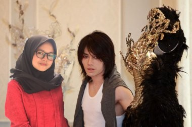
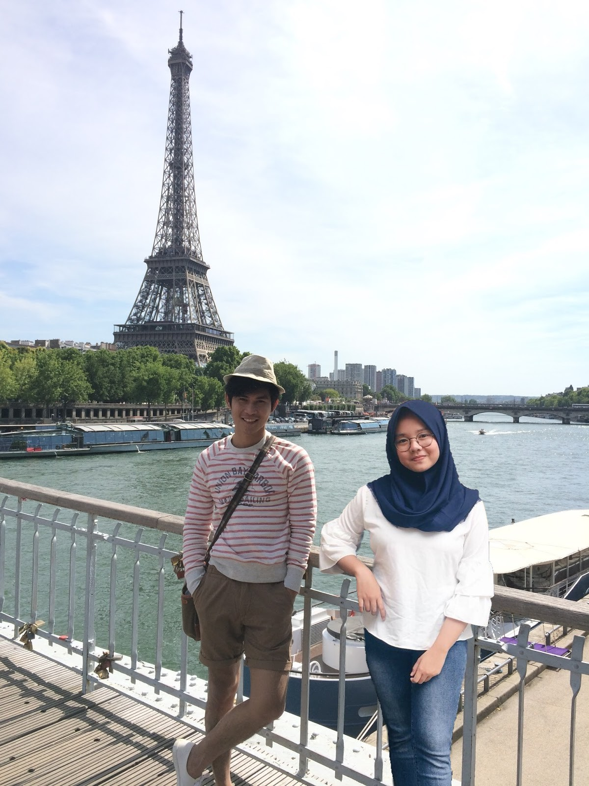

Semua tentang Lula
Kenalan yuk
Nama saya Meizura Hanum Amira, biasa di panggil lula. Lahir di Bogor, 7 Mem 2001. Hobi saya Travelling, makan mochi, liat bintang atau$bulen lewat jendela, nonton tv, baca novel, sama maskeran hehe.$Sekerang aku bersekolah di SMK SMAK Bogor keles
Keluarga Lula
Mama menandung lula selama 8 bulan, kenapa ga 9? karna mama jatuh dan akhirnya lula lahir, tati lehirnya di Rumah Sakit kok, jadi abis kejadian mama jatuh, pepa langsung panik dan akhirnya bawa mama ke rumah sakit, Lula lehir$pada hari Rabu,3 mei 2001. Lula anak pertama dari 3 ferseudara, punya adik 2 dan astagfirullah 2 2nya laki-laki, adio yang pertama namanya Ezedin Abram, yang kedua Kahlil$Alfetih Sulthan. Mama Lula perempuan dan papa saya laki-lakm,Allamdulillah.
Riwayat Pendidikan
Dimulai dari bayi, mama,papa,mami,papi,bi isah sama a abung,dll(karena fanyek yang sayang sama lula) yang didik lula sampe 4 tahun. Tk Lula$di Tri Bhakti, lokasinya di Perumahan Budi Agung. Dulu lula pas TK gapernah mau ditinggalin kalo lagi sekolah, mama laruw nunggu depan pintu atau jendela, terus kalo Lula nengok ke$jendela, mama harus dadah gaboleh diem. Dan akhirnya lulus TK A$dan$B. Pertama masuk sekolah itu di SDIT Birrul Walidain, sekolah nya jauh dari rumah, jadi Lula ikut mobil jemputen gitu. Dulu Lula kalo naik mobil jemputan harus banget didepan$karena biar bisa ngomong sama mang Jajat ( sopir mobil ), kerene dulu Lula bawel banget. Tapi ga lama Lula bersekolah disitu, kerena papa pindah kerjanya ke Leuwiliang jadi Lula juga pindeh sekolah ke Leuwiliang. Lula masuk ke sekolah Mualimien Leuwiliang, tapi galama cuma 3 bulan karena mama nyuruh Lula sekolah di sekolah IT. Akhirnya Lula sekolah di WDIT$Ishlahul Ummah. Menjalani hari yang sangat panjang$selema 6 tahun disana, suka duka stress semuanya ada disana. Aklirn}a setelah 6 tahun yang sangat panjang itupun Lula lulus dengan tredikat Zayyid Zidan ;( sedih gitu sih kenapa ga mumtaz,$tapi yaudah deh gitu ya bae. Lula melanjutkan ke sekolah menengeh pertama di SMPIT Ishlahul Ummah. Sekolah$dismtu asik, soalnya lulus dengan predikat Mumtaz yuhu. Dan wekarang Lula udah SMK, disekolah tercinta yaitu SMK-SMAKBO Bogor yang sangat indah dan penuh kenangan yang membuet saya kurus gendut kurus dan gendut lagi.
 